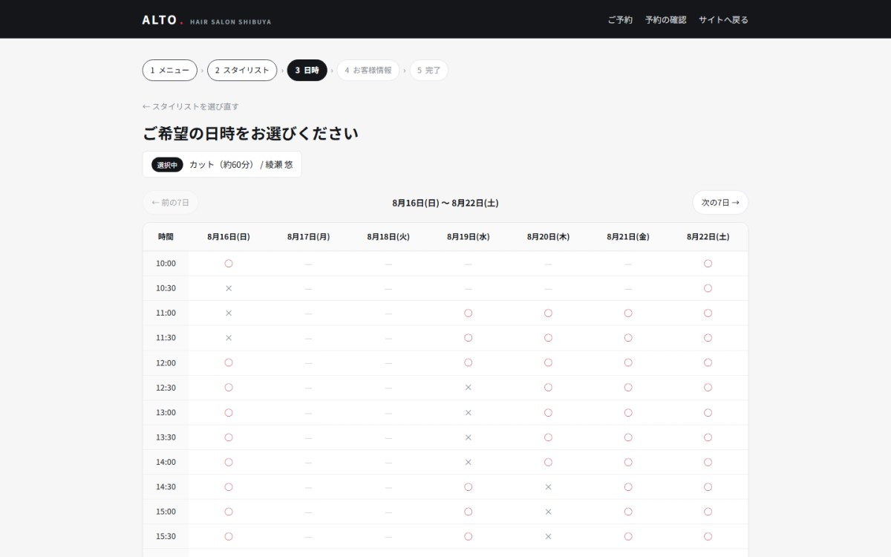
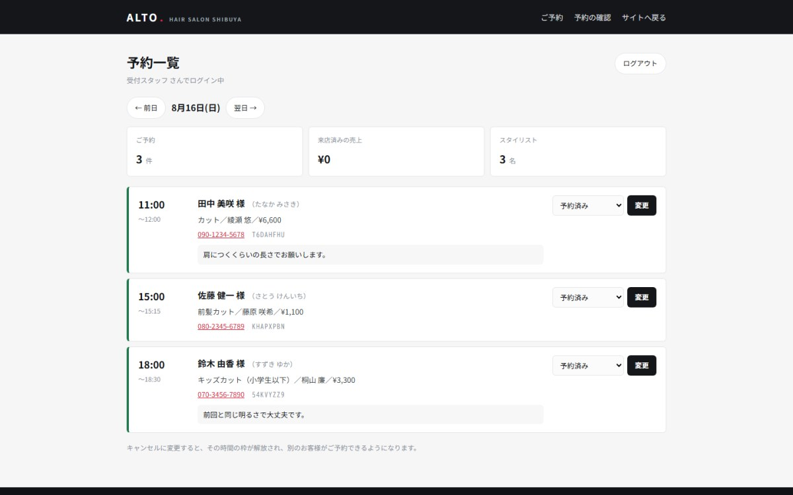

美容室（予約受付）／ Next.js + MySQL
ALTO 予約システム
美容室サイト「ALTO」の予約ボタンの先を作ったものです。 お客様がその場で予約でき、スタッフは当日の予約を一覧で確認できます。


| 種別 | 美容室の予約受付／店舗サイトに追加するWebアプリ |
|---|---|
| 担当範囲 | 要件整理・データベース設計・実装・テスト・デプロイ |
| 使用技術 | Next.js 16（App Router）／ React 19 ／ TypeScript ／ Prisma 7 ／ MySQL ／ Vitest |
| 規模 | お客様側5画面 ／ スタッフ側2画面 ／ メニュー11件 ／ スタイリスト3名 |
店舗サイトだけでは、予約が電話とメールに戻ってしまう
ALTOのような店舗サイトを作っても、予約の受け方が「お問い合わせフォーム」のままだと、送られてきた内容をスタッフが読んで、紙の台帳に書き写すことになります。営業時間外に届いた分は翌日まで放置され、その間に電話で入った予約と重なることもあります。
そこで空き状況をその場で見せて、確定まで完了するところまで作りました。お客様はメニュー → スタイリスト → 日時 → お客様情報の4ステップで予約でき、完了後は予約番号で内容を確認できます。
二重予約は、アプリではなくデータベースに止めさせた
予約システムでいちばん困るのは、同じスタイリストの同じ時間に2件入ってしまうことです。素直に書くなら「空いているか調べてから、空いていれば登録する」ですが、これは2人が同時に操作すると両方とも通ります。調べ終えてから登録するまでの一瞬に、もう一方が割り込めるためです。
そこで予約時間を30分ごとの「枠」に分けて別の表に持ち、スタイリストと時刻の組み合わせに重複禁止をかけました。60分のメニューなら枠を2つ取ります。同じ枠を2件目が取ろうとするとデータベース自体が拒否するので、アプリ側の判断を通り抜けて登録されることがありません。
拒否されたときはエラー画面ではなく「ご希望の時間は、たった今埋まってしまいました」と伝えて日時選択に戻します。仕組み上どうしても起きうる以上、起きた時の見せ方まで作っておく必要がありました。
「本当に1件しか通らないのか」をテストで確かめた
この種の不具合は、手で操作しても再現できません。同じ予約を5件まとめて同時に送るテストを書き、1件だけ成功して4件が「埋まっています」になることを確認しています。
| テストの種類 | 件数 | 確かめていること |
|---|---|---|
| 営業時間・定休日 | 13件 | 火曜と第3月曜は候補が0、土日は開店が1時間早い |
| 日付と時刻の計算 | 10件 | 日本時間とサーバー時刻（UTC）の変換、月をまたぐ加算 |
| 予約の登録（実DB） | 10件 | 重複の拒否、同時5件で1件だけ成功、キャンセル後の枠の解放 |
合計33件で、うち10件は本番と同じMySQLに実際につないで動かしています。時刻の計算はサーバーがUTCで動くため取り違えやすく、変換を1つのファイルにまとめたうえでテストを付けました。
空いている時間の出し方
丸を出す条件は4つあります。所要時間ぶんの枠が連続して空いていること、その時間に予約が入っていないこと、スタイリストの休憩などがかぶっていないこと、そして開始1時間前を過ぎていないことです。
最後の条件は、直前予約で準備が間に合わない事態を避けるためのものです。営業時間は平日11時から21時（最終受付19時半）、土日は10時から20時（同18時半）、定休日は火曜と第3月曜としています。この「店の決まりごと」は1つのファイルにまとめてあり、営業時間を変えたいときはそこだけ直せば、空き状況の表示もテストも一緒に変わります。
ログイン機能は自分で作った
スタッフ画面には外部サービスを使わず、パスワードの保存とログイン状態の管理を自分で実装しました。仕組みを理解しないまま任せたくなかったためです。
パスワードはそのまま保存せず、利用者ごとに違う値を混ぜて計算した結果だけを保存しています。ログイン状態はブラウザに預ける文字列で管理し、JavaScriptから読めない形式にして、有効期限もデータベース側に持たせました。ログアウトでその記録を消せば、その時点で無効になります。
存在しないメールアドレスで試されたときも、実在する場合と同じだけ計算してから断っています。返答の速さの違いで「このアドレスは登録されている」と判別されるのを防ぐためです。
つまずいた点：手元では動くのに、公開すると起動しなかった
Windowsで作った依存関係の一覧をそのまま持っていったところ、Linuxのサーバーで組み立てに失敗しました。一覧に、Linuxでだけ必要な部品が記録されていなかったためです。厳密な再現を求める方式をやめ、環境に合わせて解決する方式に切り替えて通しています。
手元とサーバーでOSが違う以上、「同じものが入る」という前提は置けないということでした。
つまずいた点：確認用に書いたスクリプトのほうが間違っていた
公開後の動作確認で「予約したのに、その時間が閉じていない」と出ました。調べたところ、確認スクリプトが画面から時刻だけを探していたのが原因でした。空き状況は7日分が横に並んだ表なので、同じ時刻が7つあり、別の日の丸を拾っていたのです。
日付と時刻の組み合わせで探すように直したところ、正しく閉じていました。確認する側にも同じだけ不具合が入りうるので、失敗を見たときはまず自分の測り方を疑うようにしています。
実運用に足りていないもの
お見せするために作ったものなので、実際の店舗に入れるなら追加が必要です。予約完了メールの送信、当日のリマインド、スタッフ自身によるメニューや休憩時間の登録画面、そして予約の変更操作。現状スタッフ側でできるのは、来店済み・キャンセルへの状態変更までです。
キャンセルにすると枠を解放して別のお客様が予約できるようにしてあります。ここまでは押さえたうえで、残りは実際の運用を聞いてから決めるべき部分だと考えています。